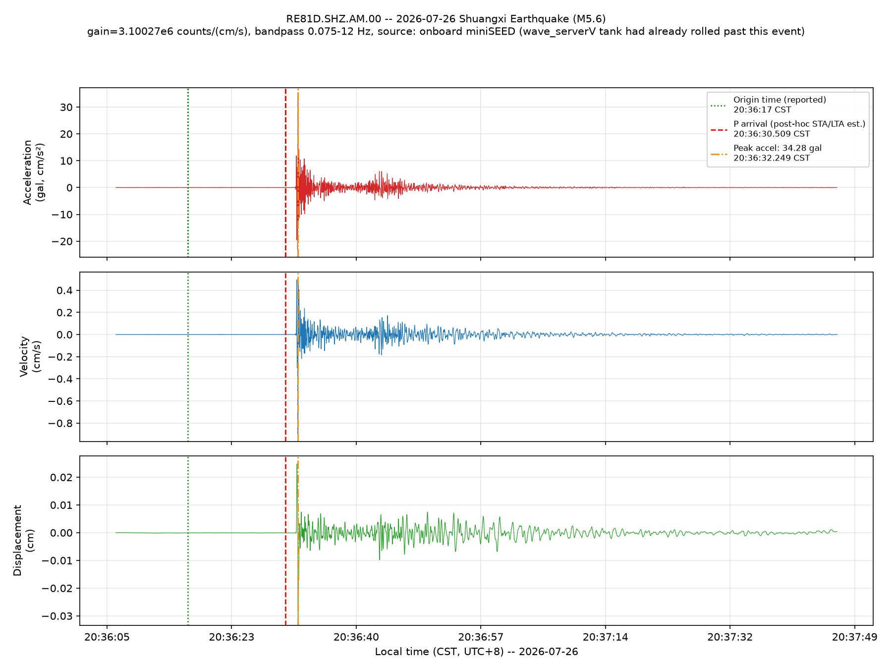

2026-07-26 Shuangxi Earthquake (M5.6) — RE81D station report
20:36:30.509 CST (12:36:30.509 UTC)
這個時間點是事後用 STA/LTA 演算法重新估算的結果，不是系統 當下自動判斷出來的。這起地震發生時，本站上游用來做多站協同定位的遠端測站 （IRIS 資料流）剛好斷線中，所以「網路型 EEW」那一層完全沒有出解，Telegram/ Discord 也沒有推播——只有 RE81D 自己的即時震度量測層有反應（見下方）。
This is a post-hoc estimate (classic STA/LTA on the bandpass-filtered waveform), not a live system determination — the network-EEW tier had no upstream station data at the time (an external feed was down) and never produced a solution for this event.
34.28 gal，出現在 20:36:32.249 CST (12:36:32.249 UTC) ——事後對波形做 0.075–12 Hz 濾波後，在加速度序列上取絕對值最大點。
本站即時演算法（station_watch.py，用來即時推播震度告警的
那一層）當下量到的峰值是 40.11 gal，時間點是 20:36:35
CST。兩個數字不同，是因為即時演算法為了低延遲不做頻帶濾波，事後分析多了
一道濾波，會讓數值系統性地略低——但兩者換算出來的中央氣象署震度分級結果
一致，都是 4 級。
The real-time onsite algorithm measured a peak of 40.11 gal (unfiltered, optimized for low latency); this offline, bandpass-filtered reanalysis gives 34.28 gal. Both classify as CWA intensity level 4 — the discrepancy is purely a filtering-methodology difference, not a data or calibration error.

加速度／速度／位移三軸波形，X 軸為實際台灣時間 (CST)。圖上綠色虛線為發震 時刻，紅色虛線為 P 波到時（事後估算），橘色虛線為最大加速度到時。資料來源 為 RE81D 站上自身儲存的原始波形檔（RaspberryShake 機載 archive），因為 Earthworm 系統的 wave_serverV 循環暫存在事發當時就已經把這段資料覆寫掉了。
← 回地震事件列表 / Back to event list ・ 回即時監測首頁 / Back to live dashboard